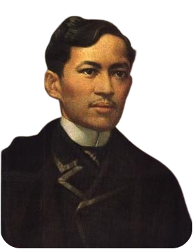

Biography
José Rizal was born in 1861 in Calamba, Laguna, and displayed remarkable intelligence from an early age. He pursued his studies in Manila before traveling to Europe, where his experiences broadened his perspective and deepened his commitment to exposing injustices in the Philippines.
Rizal authored Noli Me Tángere and El Filibusterismo, two influential novels that ignited the revolutionary movement and became catalysts for reform. Despite advocating for peaceful change, he was detained by Spanish authorities. His execution in 1896 cemented his legacy as a national hero and a symbol of Filipino resistance.
Quotes
"The people do not complain because they have no voice; do not move because they are lethargic, and you say that they do not suffer because you have not seen their hearts bleed"
"Let us not ask for miracles, let us not ask for concern with what is good for the country of him who comes as a stranger to make his fortune and leave afterwards"